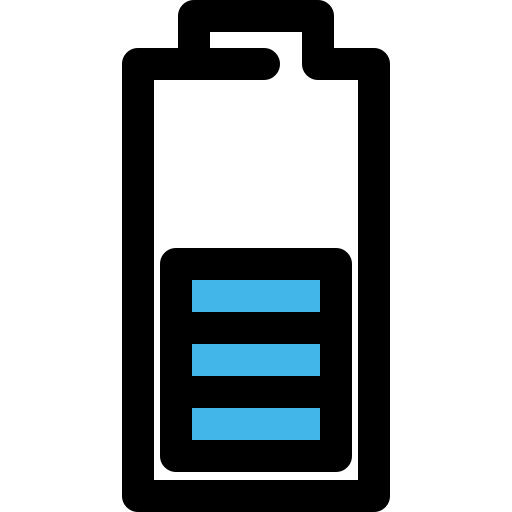

India is the third largest producer of electricity in the world.[7] During the fiscal year (FY) 2021–22, the total electricity generation in the country was 1,719 TWh, of which 1,484 TWh was generated by utilities.[3]
The gross electricity consumption per capita in FY2019 was 1,208 kWh.[8] In FY2015, electric energy consumption in agriculture was recorded as being the highest (17.89%) worldwide.[5] The per capita electricity consumption is low compared to most other countries despite India having a low electricity tariff.[9]
The national electric grid in India has an installed capacity of 410.3 GW as of 31 December 2022.[2] Renewable power plants, which also include large hydroelectric power plants, constitute 40.7% of the total installed capacity. India has a surplus power generation capacity but lacks adequate fuel supply and power distribution infrastructure. The average capacity factor of thermal power plants is below 60% against the norm of 85%.[10]
India's electricity sector is dominated by fossil fuels, in particular coal, which produced about three-quarters of the country's electricity.[11][12] The government declared its efforts to increase investment in renewable energy. The government's draft National Electricity Plan of 2022 states that the country does not need anymore fossil fuel power plants in the utility sector until 2027 besides those currently under construction.[13][14] It is expected that non-fossil fuel generation contribution is likely to be around 44.7% of the total gross electricity generation by 2029–30.


The first demonstration of electric light in Calcutta (now Kolkata) was conducted on 24 July 1879 by P.W. Fleury & Co. On 7 January 1897, Kilburn & Co secured the Calcutta electric lighting license as agents of the Indian Electric Co, which was registered in London on 15 January 1897. A month later, the company was renamed the Calcutta Electric Supply Corporation. The control of the company was transferred from London to Calcutta only in 1970. The introduction of electricity in Calcutta was a success, and power was next introduced in Bombay (now Mumbai).[16] The first electric lighting demonstration in Mumbai was in 1882 at Crawford Market and the Bombay Electric Supply & Tramways Company (BEST) set up a generating station in 1905 to provide electricity for the tramway.[17]
The first hydroelectric installation in India was installed near a tea estate at Sidrapong for the Darjeeling Municipality in 1897.[18] The first electric street light in Asia was lit on 5 August 1905 in Bangalore.[19] The first electric train in the country ran on the Harbour Line between Bombay's Victoria Terminus and Kurla on 3 February 1925.[20] The first high-voltage laboratory of India was established at the Government Engineering College, Jabalpur in 1947.[21] On 18 August 2015, Cochin International Airport became the world's first fully solar powered airport with the inauguration of a dedicated solar plant.[22][23]
India began using grid management on a regional basis in the 1960s. Individual State grids were interconnected to form 5 regional grids covering mainland India, the Northern, Eastern, Western, North Eastern and Southern Grids. These regional links were established to enable transmission of surplus electricity between states in each region. In the 1990s, the Indian government began planning for a national grid. Regional grids were initially interconnected by asynchronous high-voltage direct current (HVDC) back-to-back links facilitating the limited exchange of regulated power. The links were subsequently upgraded to high capacity synchronous links.[24]
The first interconnection of regional grids was established in October 1991 when the North Eastern and Eastern grids were interconnected. The Western Grid was interconnected with these grids in March 2003. The Northern grid was also interconnected in August 2006, forming a Central Grid that was synchronously connected and operating at one frequency.[24] The sole remaining regional grid, the Southern Grid, was synchronously interconnected to the Central Grid on 31 December 2013 with the commissioning of the 765 kV Raichur-Solapur transmission line, establishing the National Grid.[24][25]
By the end of the calendar year 2015, despite poor hydroelectricity generation, India had become a power surplus nation with huge power generation capacity idling for want of demand.[26][27][28] The calendar year 2016 started with steep falls in the international price of energy commodities such as coal, diesel oil, naphtha, bunker fuel, and liquefied natural gas (LNG), which are used in electricity generation in India.[29][30][31][32][33] As a result of the global glut in petroleum products, these fuels became cheap enough to compete with pit head coal-based power generators.[34] Coal prices have also fallen.[35] Low demand for coal has led to coal stocks building up at power stations as well as coal mines.[36] New installations of renewable energy in India surpassed installations of fossil fuel for the first time in 2016–17.[37]
On 29 March 2017, the Central Electricity Authority (CEA) stated that for the first time India has become a net exporter of electricity. India exported 5,798 GWh to neighboring countries, against a total import of 5,585 GWh.
The Government of India launched a program called "Power for All" in 2016.[38] The program was accomplished by December 2018 in providing the necessary infrastructure to ensure uninterrupted electricity supply to all households, industries, and commercial establishments.[39] Funding was made through a collaboration between the Government of India and its constituent states.[40][41]
During the fiscal year 2019–20, the utility energy availability was 1,284.44 billion KWh, a shortfall relative to requirements by 6.5 billion KWh (−0.5%). Peak load met was 182,533 MW, 1,229 MW (−0.6%) below requirements. In the 2020 Load Generation Balance report, India's Central Electricity Authority anticipated energy surplus and peak surplus to be 2.7% and 9.1%, respectively, for the 2020–21 fiscal year.[57] Power would be made available to few states expected to face shortages from states with a surplus, through regional transmission links.[58] From the calendar year 2015 onwards, power generation in India has been less of a problem than power distribution.
Nearly 0.07% of Indian households (0.2 million) have no access to electricity.[1] The International Energy Agency estimates India will add between 600 GW to 1,200 GW of additional new power generation capacity before 2050.[62] This added new capacity is similar in scale to the 740 GW total power generation capacity of the European Union (EU-27) in 2005. The technologies and fuel sources India adopts as it adds this electricity generation capacity may have a significant impact on global resource usage and environmental issues.[63] The demand for electricity for cooling (HVAC) is projected to grow rapidly.[64]
According to the analysis presented in the India Cooling Action Plan (ICAP) released by the Ministry of Environment, Forests and Climate Change, only 8 percent of Indian households own air-conditioning units. The cooling demand across India is projected to rise at a rate of 15-20 percent annually and aggregated cooling demand will grow to around eight times by 2037-38, as compared to the 2017-18 baseline. In India, 45 percent of the country’s peak electricity demand in 2050 is expected to come from space cooling alone.[65]
About 136 million Indians (11%) use traditional fuels – firewood, agricultural waste and dry animal dung fuel – for cooking and general heating needs.[66] These traditional fuels are burnt in cook stoves, sometimes known as chulah or chulha.[67] Traditional fuel is an inefficient source of energy, and its burning releases high levels of smoke, PM10 particulate matter, NOx, SO
x, PAHs, polyaromatics, formaldehyde, carbon monoxide and other air pollutants, affecting outdoor air quality, haze and smog, chronic health problems, damage to forests, ecosystems and global climate.[68][69][70] The World Health Organization estimates that 300,000 to 400,000 people in India die of indoor air pollution and carbon monoxide poisoning every year because of biomass burning and use of chulahs.[71]

Burning traditional fuel in conventional cook stoves is estimated to release 5–15x more pollutants than industrial combustion of coal, and is unlikely to be replaced until electricity or clean-burning fuel and combustion technologies become reliably available and widely adopted in rural and urban India. The growth of the electricity sector in India may help find a sustainable alternative to traditional fuel burning.
In addition to air pollution problems, a 2007 study finds that discharge of untreated sewage is the single most important cause for pollution of surface and groundwater in India. The majority of government-owned sewage treatment plants remain closed most of the time in part because of the lack of a reliable electricity supply to operate the plants. Uncollected waste accumulates in urban areas, causing unhygienic conditions, and release heavy metals and pollutants that leaches to surface and groundwater.[72][73] A reliable supply of electricity is required to address India's water pollution and associated environmental issues.
Other drivers for India's electricity sector are its rapidly growing economy, rising exports, improving infrastructure and increasing household incomes.
Adding to it, the recent coal crisis has raised an alarm as over 60 per cent of the electricity produced in the country is derived from thermal power plants, and thus, depend on coal.
India has recorded rapid growth in electricity generation since 1985, increasing from 179 TW-hr in 1985 to 1,057 TW-hr in 2012.[83] The majority of the increase came from coal-fired plants and non-conventional renewable energy sources (RES), with the contribution from natural gas, oil, and hydro plants decreasing in 2012–2017. The gross utility electricity generation (excluding imports from Bhutan) was 1,484 billion kWh in 2021–22, representing 8.1% annual growth compared to 2020–2021. The contribution from renewable energy sources (including large hydro) was nearly 21.7% of the total. In 2019–20, all the incremental electricity generation is contributed by renewable energy sources as the power generation from fossil fuels decreased.[84] During the year 2020–2021, the utility power generation decreased by 0.8% (11.3 billion kWh) with a reduction in power generation from fossil fuels by 1% and power generation from non-fossil sources is more or less same of the previous year. In 2020–21, India exported more electricity than it imported from neighboring countries.[85] Solar power generation in 2020–21, occupied third place after coal and hydropower generations surpassing wind, gas and nuclear power generations. In 2022-23, renewable power generation was 22.47% of total utility power generation when total utility power generation increased by 8.77% to 1614.70 billion kWh.
In India the Commercial Energy makes 74% of total energy, of which coal based energy production is around 72–75%, as per 2020 data. For utility power generation, India consumed 622.22 million tons of coal during 2019–20 which is less by 1% compared to 628.94 million tons during 2018–19. However coal imports for utility power generation increased by 12.3% during year 2019–20 at 69.22 million tons from 61.66 million tons during 2018–19.[94] A large part of the Indian coal reserve is similar to Gondwana coal: it is of low calorific value and high ash content, with poor fuel value. On average, Indian coal has a gross calorific value (GCV) of about 4500 Kcal/kg, whereas in Australia, for example, the GCV is about 6500 Kcal/kg .[95] The result is that Indian power plants using India's coal supply consume about 0.7 kg of coal per kWh of power generation, whereas in the United States thermal power plants consume about 0.45 kg of coal per kWh. In 2017, India imported nearly 130 Mtoe (nearly 200 million tons) of steam coal and coking coal, 29% of total consumption, to meet the demand in electricity, cement and steel production.[96][97]
The Centre for Science and Environment has assessed the Indian coal-based power sector as one of the most resource-wasteful and polluting sectors in the world, in part due to the high ash content in India's coal.[98] India's Ministry of Environment and Forests has therefore mandated the use of coals whose ash content has been reduced to 34% (or lower) in power plants in urban, ecologically sensitive and other critically polluted areas. The coal ash reduction industry has grown rapidly in India, with current capacity topping 90 megatonnes.[when?][citation needed]
Before a thermal power plant is approved for construction and commissioning in India it must undergo an extensive review process that includes environmental impact assessment.[99] The Ministry of Environment and Forests has produced a technical guidance manual to help project proposers avoid environmental pollution from thermal power plants.[100] As of 2016, the existing coal-fired power stations in the utility and captive power sectors were estimated to require nearly 12.5 million INR per MW capacity to install pollution control equipment to comply with the latest emission norms set out by the Ministry of Environment and Forests.[101][102][103][104] Most of the coal fired stations have not complied installation of flue gas de-sulphurisation units for reducing the pollution.[105] In April 2020, CPCB declared that over 42,000 MW thermal power plants have outlived their lives.[106] India has also banned imports of pet coke for use as fuel.[107] As a signatory to the Paris Agreement, India is also reducing power generation from coal to control the emission of greenhouse gases.[108]
The state and central power generation companies are permitted by the Government of India to minimize the cost of coal transportation using flexible coal linkage swaps from inefficient plants to efficient plants, and from plants situated far from coal mines to plants close to the pit head, leading to a reduction in the cost of power.[109] Although coal imports for consumption in the utility sector are declining, the overall imports of steam coal are increasing as the local coal production is unable to meet the requirements of coal-fired captive power plants.[110][111] India is introducing single spot auctions/exchanges for all type of coal consumers.
India's coal-fired, oil-fired and natural gas-fired thermal power plants are inefficient and replacing them with cheaper renewable technologies offers significant potential for greenhouse gas (CO2) emission reduction. India's thermal power plants emit 50% to 120% more CO2 per kWh produced compared to average emissions from their European Union (EU-27) counterparts.[113] The central government plans to retire coal-based plants that are at least 25 years old and contributing excessive pollution, totalling 11,000 MW of capacity.[114] As of 2018 there is no similar retirement plan for the captive power sector. In 2020 Carbon Tracker estimated that phasing out 20 years or more old coal-fired plants and the coal fired plants under construction with electricity sale price exceeding INR 4/kWh with new renewables is more economical as these coal fired plants are imposing heavy financial burden on Discoms.[115]
Some diesel generator plants and gas turbine plants were also decommissioned in 2016 though they are best suitable for catering ancillary services
India has committed to install 275,000 MW renewable energy capacity by 2027.[117] The existing base load coal and gas based power plants need to be flexible enough to accommodate the variable renewable energy. Also ramping up, ramping down, warm start up, hot start up capabilities of existing coal based power stations are critical to accommodate the frequent variations in renewable power generation.[118][119] It is also examined to use the retired coal based electric generators as synchronous condensers for improving the grid inertia when it is dominated by static power generation sources like solar and wind power.[120] As the solar power plants remain idle during the night hours, reactive power capability of the inverters installed as part of the solar power plant can also be used during the night time for solving the problem of very high voltage which occurs due to low loads on the transmission lines.[121] Wind and solar power plants are also capable to provide fast frequency response in ramping up falling grid frequency.
The installed capacity of natural gas-based power plants (including the plants ready to be commissioned with the commencement of natural gas supply) was nearly 26,765 MW at the end of the financial year 2014–15. These plants were operating at an overall plant load factor (PLF) of 22% due to a severe shortage of natural gas in the country,[123] and the fact that imported liquid natural gas (LNG) was too expensive for power generation. Many power stations were shut down throughout the year for a lack of natural gas supply.[124] The natural gas shortage for power sector alone was nearly 100 million cubic metre per day at standard conditions.[125] The break-even price for switching from imported coal to LNG in electricity generation was estimated to be approximately US$6 per million British thermal units ($20/MWh) (thermal energy).[126] The Indian government has taken steps to enhance power generation from gas-based power plants by waiving import duties and taxes.[127][128]
Gasification of Char/Coal
Gasification of coal or lignite or pet coke or biomass produces synthesis gas or syngas (also known as coal gas or wood gas) which is a mixture of hydrogen, carbon monoxide and carbon dioxide gases.[129] Coal gas can be converted into synthetic natural gas by using the Fischer–Tropsch process at low pressure and high temperature. Coal gas can also be produced by underground coal gasification if the coal deposits are located deep in the ground or it is uneconomical to mine the coal.[130] Synthetic natural gas production technologies promise to dramatically improve India's supply of natural gas.[131] The Dankuni coal complex produces syngas that is piped to industrial users in Calcutta.[132] Many coal-based fertiliser plants can also be economically retrofitted to produce synthetic natural gas. It is estimated that the production cost for syngas could be below US$6 per million British thermal units ($20/MWh).[133][134]
Earlier, natural gas use in power generation was thought to be a bridge fuel as it emits far less CO2 (below 50%) when compared to coal use in power generation until renewable power generation without CO2 emissions become economical.[135] Renewable power generation is already cheaper than coal and gas fueled power generation in India. Now the bridge fuel concept is no more valid and existing gas-based generation needs to compete with the coal-based generation when there is no adequate renewable power generation (including storage and peaking type hydropower). The problem of stranded assets/capacity is more deep-rooted for gas-based power plants than that of the coal-based power plants as coal is far cheaper than natural gas in India.
As of 31 March 2022, India had 6.78 GW of installed nuclear power generation capacity or nearly 1.7% of the total installed utility power generation capacity. Nuclear plants generated 47,063 million kWh at 79.24% PLF in 2021–22.[136]
India's nuclear power plant development began in 1964. India signed an agreement with General Electric (United States) for the construction and commissioning of two boiling water reactors at Tarapur. In 1967, this effort was placed under India's Department of Atomic Energy. In 1971, India set up its first pressurized heavy water reactors with Canadian collaboration in Rajasthan.
In 1987, India created the Nuclear Power Corporation of India Limited to commercialize nuclear power. The Nuclear Power Corporation of India is a public sector enterprise, wholly owned by the Government of India, under the administrative control of the Department of Atomic Energy. The state-owned company has ambitious plans to establish plants totalling to 63 GW generation capacity by 2032.[137]
India's nuclear power generation effort is subject to many safeguards and oversights. Its environmental management system is ISO-14001 certified, and it undergoes peer review by the World Association of Nuclear Operators, including a pre-start-up peer review. The Nuclear Power Corporation of India Limited commented in its annual report for 2011 that its biggest challenge is to address public and policymaker perceptions about the safety of nuclear power, particularly after the Fukushima Daiichi nuclear disaster in Japan.[138]
In 2011, India had 18 pressurized heavy water reactors in operation, with another four projects launched totaling 2.8 GW capacity. India is in the process of launching its first prototype fast breeder reactor using plutonium-based fuel obtained by reprocessing the spent fuel of first-stage reactors. The prototype reactor is located in Tamil Nadu and has a capacity of 500 MW.[139]
India has nuclear power plants operating in the following states: Maharashtra, Gujarat, Rajasthan, Uttar Pradesh, Tamil Nadu and Karnataka. These reactors have an installed electricity generation capacity of between 100 MW and 1000 MW each. The Kudankulam nuclear power plant (KNPP) is the single largest nuclear power station in India. KNPP Unit 1 with a capacity of 1000 MWe was commissioned in July 2013, while Unit 2, also with a capacity of 1000 MWe, attained criticality in 2016. Two additional units are under construction.[140] The plant has suffered multiple shutdowns, leading to calls for an expert panel to investigate.[141] First 700 MWe PHWR unit under phase II of Kakrapar Atomic Power Station achieved first criticality in July 2020 and expected to begin commercial operation by December 2022.[139][142]
In 2011, uranium was discovered in the Tummalapalle uranium mine, the country's largest uranium mine and possibly one of the world's largest. The reserves were estimated at 64,000 tonnes, and could be as large as 150,000 tonnes.[143] The mine began operation in 2012.[144]
India's share of nuclear power plant generation capacity is 1.2% of worldwide nuclear power production capacity, making it the 15th largest nuclear power producer. India aims to supply 9% of its electricity needs with nuclear power by 2032 and 25% by 2050.[138][145] Jaitapur Nuclear Power Project, India's largest nuclear power plant project, is planned to be implemented in partnership with Électricité de France under an agreement signed on 10 March 2018.[146]
India's government is developing up to 62 additional nuclear reactors, mostly using thorium fuel, which it expects to be operational by 2025. It is the "only country in the world with a detailed, funded, government-approved plan" to focus on thorium-based nuclear power.